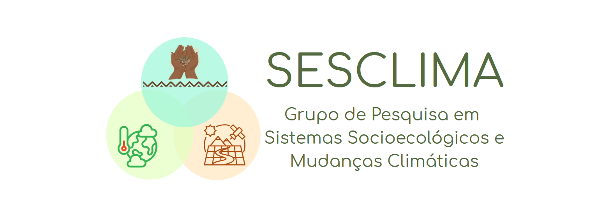

Perfil Profissional

LABORATÓRIO
SESCLIMA
Sobre Mim
Docente Adjunto da Universidade Federal de Rondônia (UNIR) - Campus de Ariquemes, e docente permanente no Programa de Pós-Graduação em Ciências Ambientais. Fomento o ensino público de qualidade e a popularização da ciência através de parcerias com ONGs, instituições estaduais (EMATER-RO, FUNAI-RO, TCE-RO, SEDAM-RO) e universidades internacionais de prestígio.
Minha pesquisa aborda desafios ambientais complexos na interface entre ciência do clima, fragmentação florestal, recursos hídricos e percepções da comunidade. Transformo produtos de sensoriamento remoto multissensor (ópticos e radar) e dados censitários em informações socioespaciais acionáveis.
Principais Ferramentas & Tecnologias
Grupo de Pesquisa
SESCLIMA - UNIR
Grupo de Pesquisa em Sistemas Socioecológicos e Mudanças Climáticas
O SESCLIMA atua na investigação das interações dinâmicas entre os sistemas naturais e sociais (Sistemas Socioecológicos) com especial foco na resiliência e adaptação frente aos cenários de mudanças climáticas.
Nossas linhas de atuação utilizam abordagens interdisciplinares, integrando ciência de dados espaciais, modelagem ambiental e conhecimento ecológico tradicional, buscando compreender as vulnerabilidades e propor soluções baseadas na natureza para a região Amazônica e além.
Recursos Hídricos
Impactos climáticos e antrópicos na segurança hídrica regional.
Uso do Solo
Fragmentação florestal, expansão agropecuária e impactos.
Equipe
Orientandos de Mestrado e Pesquisadores
Enilson Lagass do Carmo
Investiga a dinâmica espaço-temporal das pressões antrópicas sobre florestas no Estado de Rondônia através da análise de ecologia da paisagem, visando apoiar a conservação de ecossistemas locais e resiliência climática.
Romario Vitorino Ferreira
Foca na pesquisa sobre produção agropecuária, processos de desmatamento e os impactos das mudanças climáticas em Rondônia, buscando o desenvolvimento de estratégias em sistemas socioecológicos sustentáveis.
Publicações
Artigos Científicos Completos (Organizados por Ano)
2026
ANÁLISE ESPAÇO-TEMPORAL DAS CICATRIZES DE QUEIMADAS USANDO MÉTRICAS DA ECOLOGIA DA PAISAGEM...
BERSON, P. R.; MOREIRA, R. M. et al.
CADERNO DE GEOGRAFIA Acessar Artigo →
Causal machine learning methods for understanding land use and land cover change
EIGENBROD, F.; MOREIRA, R. M. et al.
Landscape Ecology DOI: 10.1007/s10980-025-02279-7 →
Seasonal patterns and atmospheric modulators of erythemal UV radiation in a sensitive region of the Brazilian Amazon
ALVES, P. V.; MOREIRA, R. M. et al.
Remote Sensing Applications DOI: 10.1016/j.rsase.2025.101857 →
Trends and spatial-temporal dynamics in landscape features' relationship with fires show pressure on Indigenous territories in the Amazon
MOREIRA, R. M.
Regional Environmental Change DOI: 10.1007/s10113-026-02562-6 →
US funding cuts offer a rare chance to remodel Global North-Global South research collaboration
BELL, A. R.; MOREIRA, R. M. et al.
Nature Human Behaviour DOI: 10.1038/s41562-026-02497-2 →
2025
ANÁLISE DA PRECIPITAÇÃO EXTREMA DIÁRIA EM RONDÔNIA: APLICAÇÃO DE ÍNDICES E TENDÊNCIAS NA SÉRIE HISTÓRICA 1980-2020
MOREIRA, R. M. et al.
Caminhos da Geografia DOI: 10.14393/rcg2610677399 →
Conservation: The secondary road to deforestation
MOREIRA, R. M.; SILLS, E. O.
CURRENT BIOLOGY DOI: 10.1016/j.cub.2025.02.059 →
Morphostructural Controls Reflected in Drainage Patterns
ARCHANJO, R. E. S.; MOREIRA, R. M. et al.
Hydrology DOI: 10.3390/hydrology12120314 →
Precipitation dynamics in forests and deforestation areas during the dry season in the Central-Eastern Amazon
MOREIRA, R. M.; SANTOS, B. C.
Revista Brasileira de Climatologia DOI: 10.55761/abclima.v37i21.18918 →
The Role of Protected Areas in the Amazon: Modeling and Quantifying Future Forest Fragmentation
MOREIRA, R. M.; PEREIRA, G. T.
Journal of Sustainable Forestry DOI: 10.1080/10549811.2025.2574022 →
Using Xgboost models for daily rainfall prediction
SANCHES, R. G.; MOREIRA, R. M. et al.
Anales De Geografia De La Universidad Complutense DOI: 10.5209/aguc.98944 →
2024
Agronomic management response in maize (L.) production across three agroecological zones of Kenya
KIPKULEI, H. K.; MOREIRA, R. M. et al.
Agrosystems, Geosciences & Environment DOI: 10.1002/agg2.20478 →
Identifying clusters of precipitation for the Brazilian Legal Amazon based on magnitude of trends and its correlation with sea surface temperature
MOREIRA, R. M. et al.
Scientific Reports DOI: 10.1038/s41598-024-63583-x →
Influence of precipitation and temperature on burned areas in the agricultural and cattle ranching frontier of the Brazilian Amazon
MOREIRA, R. M.; MARTINS, R. A.
ENVIRONMENTAL MONITORING AND ASSESSMENT DOI: 10.1007/s10661-024-13080-5 →
INTER-SEASONAL SPATIAL AND TEMPORAL ANALYSIS OF TRENDS AND EXTREME EVENTS IN PRECIPITATION USING GOOGLE EARTH ENGINE
MOREIRA, R. M. et al.
CADERNO DE GEOGRAFIA DOI: 10.5752/p.2318-2962.2024v34n78p815 →
Maize yield prediction and condition monitoring at the sub-county scale in Kenya
KIPKULEI, H. K.; MOREIRA, R. M. et al.
Scientific Reports DOI: 10.1038/s41598-024-62623-w →
Trends and correlation between deforestation and precipitation in the Brazilian Amazon Biome
MOREIRA, R. M.
THEORETICAL AND APPLIED CLIMATOLOGY DOI: 10.1007/s00704-024-04838-5 →
2023
A landscape ecology approach: Modeling forest fragmentation with artificial neural networks and cellular-automata Markov-chain
MOREIRA, R. M. et al.
Land Degradation & Development DOI: 10.1002/ldr.4945 →
Análise espaço-temporal e extrema da erosividade da chuva na região centro-leste do Estado de São Paulo, Brasil
BOLLELI, T. M.; MOREIRA, R. M. et al.
REVISTA DO DEPARTAMENTO DE GEOGRAFIA DOI: 10.11606/eissn.2236-2878.rdg.2023.205190 →
AS CHUVAS DE RELEVO
SANCHES, R. G.; MOREIRA, R. M. et al.
CADERNO DE GEOGRAFIA DOI: 10.5752/p.2318-2962.2023v33n75p1148 →
Precipitation Variability for Protected Areas of Primary Forest and Pastureland in Southwestern Amazônia
MOREIRA, R. M. et al.
Climate DOI: 10.3390/cli11020027 →
2022
Avaliação da qualidade de produtos gerados por levantamento de área utilizando uma aeronave remotamente pilotada
WEIS, M. G.; MOREIRA, R. M. et al.
RESEARCH, SOCIETY AND DEVELOPMENT DOI: 10.33448/rsd-v11i4.26396 →
IDENTIFICAÇÃO DE PROCESSOS EROSIVOS ATRAVÉS DE MODELOS HIDROLÓGICOS E IMAGENS AÉREAS DE ALTA RESOLUÇÃO
WEIS, M. G.; MOREIRA, R. M. et al.
NATIVA DOI: 10.31413/nativa.v10i3.13543 →
Technology and policy integration: modelling morphometric characterization and land use change using artificial neural networks
PEREIRA, G. T.; MOREIRA, R. M. et al.
REVISTA BRASILEIRA DE GEOGRAFIA FÍSICA DOI: 10.26848/rbgf.v15.6.p3189-3201 →
Análise da correlação entre cobertura vegetal e temperatura de superfície na área urbana do município de Ji-Paraná, RO
REIS, W. K. B.; MOREIRA, R. M. et al.
REVISTA DE GEOCIÊNCIAS DO NORDESTE DOI: 10.21680/2447-3359.2022v8n2id27951 →
Influência da área urbana do Município de Coxim, Mato Grosso do Sul, Brasil, sobre a qualidade da água
ANDRADE, H. S.; MOREIRA, R. M. et al.
REV. BRASILEIRA DE GESTÃO AMBIENTAL E SUSTENTABILIDADE DOI: 10.21438/rbgas(2022)092219 →